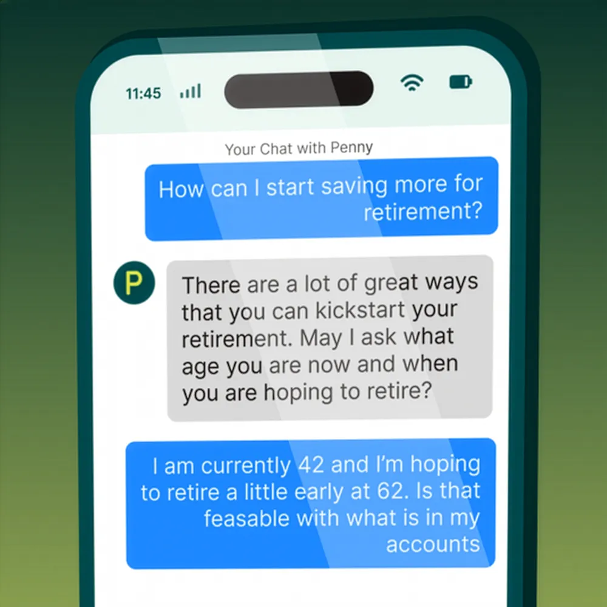
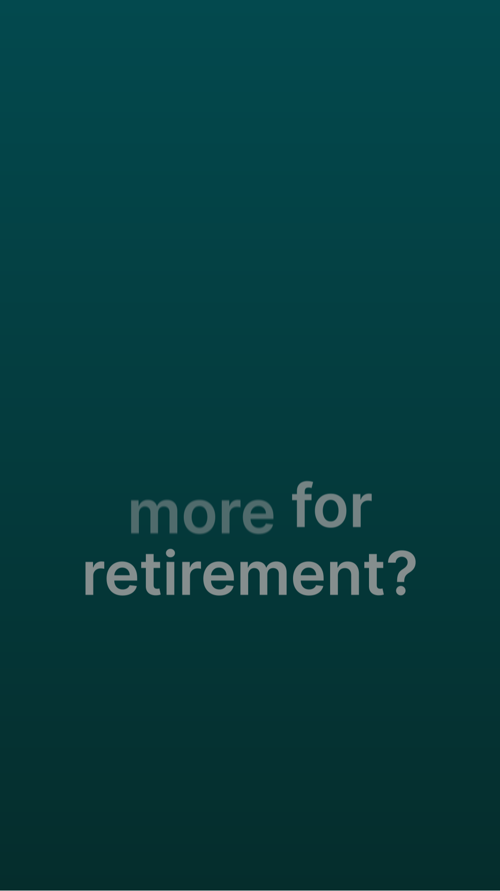
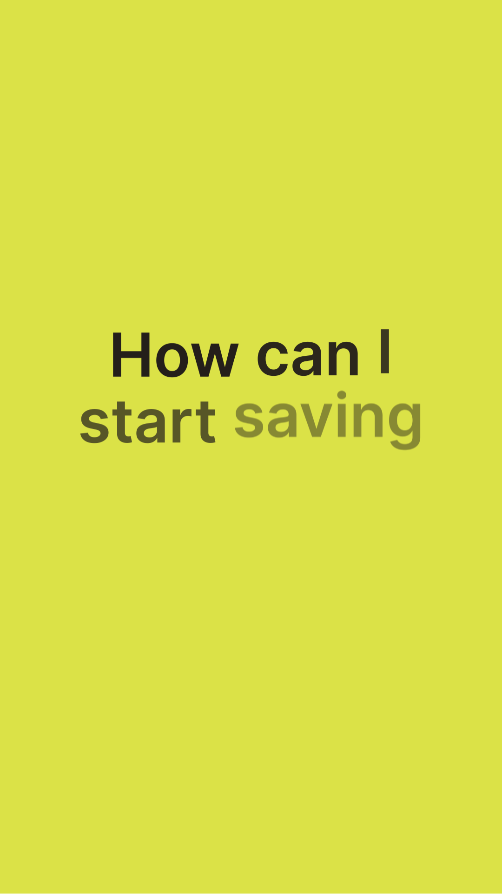
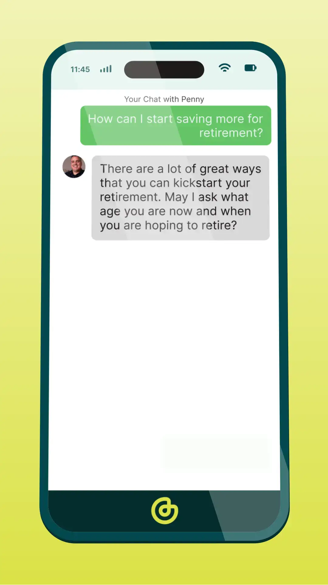
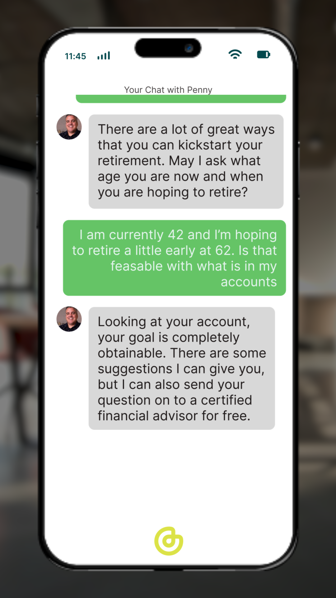
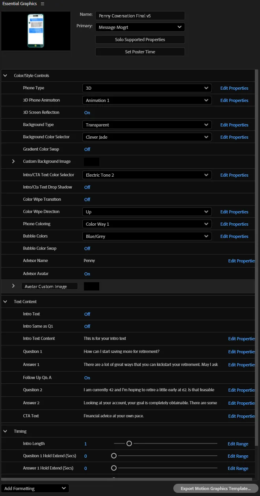

CleverCX Conversation Template

The Ask
Startup world can be tough — you've got to move fast and do more with less. CleverCX was launching a new feature, chatting with an advisor, which included their new AI assistant, Penny. They needed a way to show off that feature on social media, with multiple conversations and styles so they weren't just running the same ad over and over.
The Result
The power of After Effects mogrts was leveraged to create a massive customizable template so anyone could create a conversation post for their feeds. They had control of all messaging, animation timing, multiple style and animation options, and even a few fun little controls for that something extra. The result turned what could have been a single graphic into the foundation for a broader campaign. Most importantly, the brand is built in — no matter the choices, the colors, fonts, and feel stay right in line with what CleverCX wants to be.





Credits
- Art Direction / Motion Design / Scripting: Jared Hanline